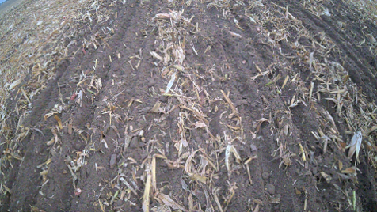
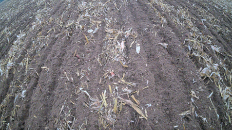
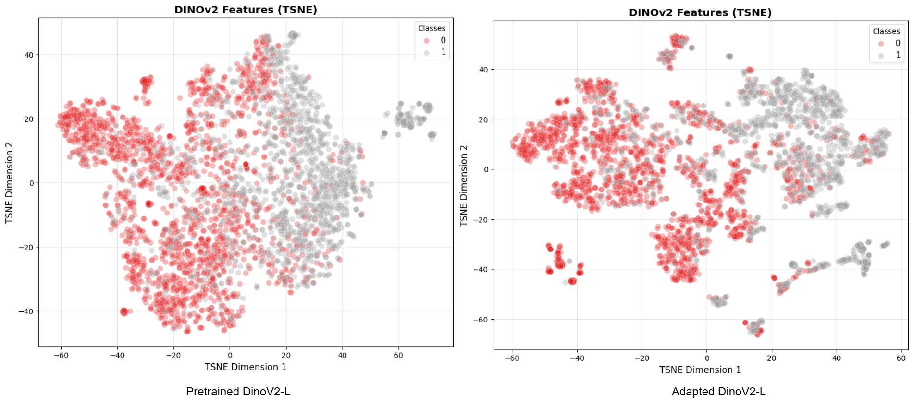
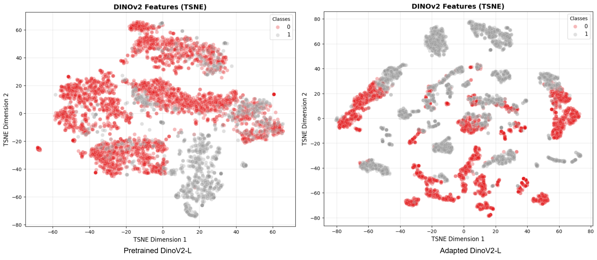

Adapting foundation models for unsupervised image classification.
We explore the adaptation of large pre-trained vision models for unsupervised image classification in specialized domains, demonstrating significant performance improvements without any fine-tuning. We mainly focus on agricultural domain by predicting state of a field through image classification.
Problem Statement
Autonomous agricultural systems require accurate understanding of field conditions to optimize resource allocation. Computer vision models can analyze field images to predict state of field in a given area to determine the type of work it needs. However, collecting and annotating large datasets for training supervised models is costly and time-consuming. We investigate whether adapting large pre-trained vision models using self-supervised learning can enhance unsupervised image classification performance in this domain, enabling accurate predictions without the need for extensive labeled data.
Method Overview
We adapt the pretrained Dinov2 model for our agricultural domain of field images using the original self-supervised tasks. We use the pretrained model as baseline and compare the results of zero-shot classification with the adapted foundation model. We present the results for two types of field attributes: 1. Attribute-1: Represents something about if the field has been worked on after the last harvest. 2. Attribute-2: Represents something about if the field has been prepared for the next crop.
Visual Results

Example Image 1

Example Image 2

TSNE Visualization of pretrained vs adapted model features for Attribute-1

TSNE Visualization of pretrained vs adapted model features for Attribute-2
Quantitative Results - Attribute-2
| Model | Setting | F1 Score | Precision | Recall |
|---|---|---|---|---|
| DinoV2-L | Zero-Shot(Pretrained) | 88.80 | 88.79 | 88.82 |
| DinoV2-G | Zero-Shot(Pretrained) | 89.26 | 89.23 | 89.32 |
| DinoV2-L | Zero-Shot(Adapted) | 95.20 | 95.20 | 95.20 |
Quantitative Results - Attribute-1
| Model | Setting | F1-Score | Precision | Recall |
|---|---|---|---|---|
| DinoV2-L | Zero-Shot(Pretrained) | 81.72 | 81.71 | 81.75 |
| DinoV2-L | Zero-Shot(Adapted) | 84.59 | 84.59 | 84.62 |
- Self-supervised learning for unsupervised image classification.
- Robust accuracy under annotation sparsity.